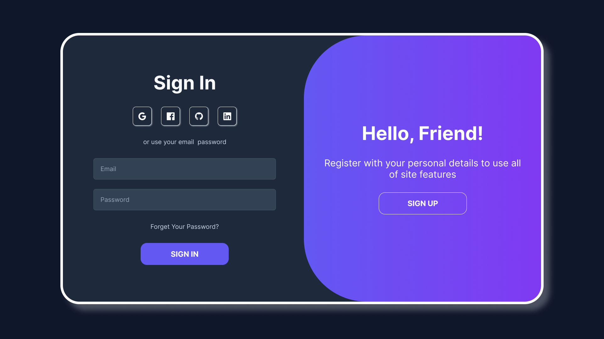
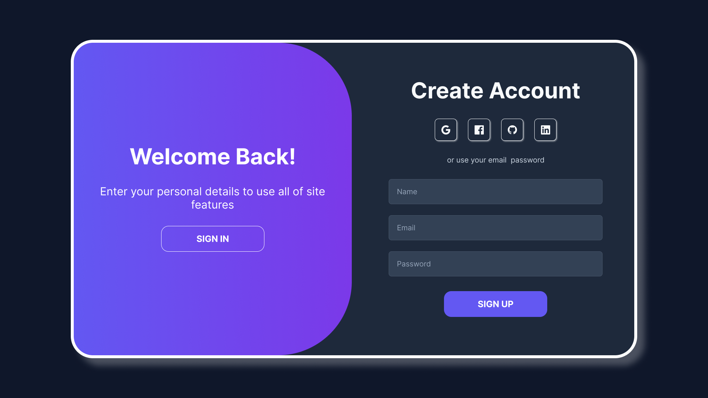

Веборієнтована інформаційна система дистанційного навчання
Web-oriented information system for distance learning
з інтеграцією особистого кабінету
Розробка веб-платформи з персоналізованим інтерфейсом для автоматизації взаємодії між студентом та викладачем, що забезпечує гнучкий доступ до навчальних матеріалів 24/7.
Актуальність теми
У сучасних умовах глобальної цифровізації, потреба у гнучких та персоналізованих системах навчання (LMS) стала критичною. Розробка власної веборієнтованої системи дозволяє вирішити проблему адаптивності освітнього процесу та забезпечити студентам зручний інструментарій для самоосвіти через функціональний особистий кабінет.
Мета та завдання дослідження
Метою роботи є проєктування та програмна реалізація інформаційної системи, що автоматизує взаємодію між викладачем та студентом у дистанційному форматі.
Основні завдання:
- Аналіз існуючих аналогів (Moodle, Google Classroom) та виявлення їхніх недоліків.
- Проєктування реляційної бази даних для зберігання навчальних матеріалів.
- Розробка інтерфейсу особистого кабінету з використанням сучасних UX/UI підходів.
- Інтеграція модулів тестування та відстеження прогресу навчання.
Методологія дослідження
Для розробки системи обрано компонентний підхід. Процес включає використання наступних технологій:
- Frontend: HTML5, CSS3 (Flexbox/Grid), JavaScript.
- Backend: Проєктування логіки серверної частини та REST API.
- Контроль версій: Використання Git та GitHub Flow для управління кодом.
Очікувані результати
Головним практичним результатом роботи є розробка діючого прототипу веборієнтованої системи. Нижче представлені попередні макети ключових інтерфейсів особистого кабінету користувача:

